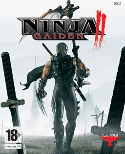
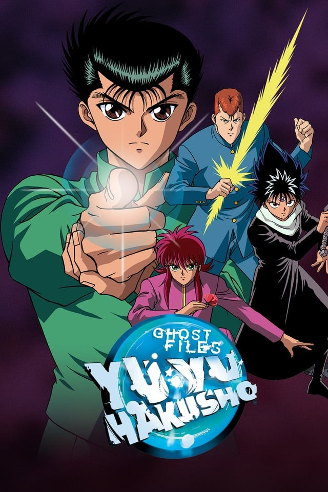

Game That I've Enjoyed Recently
Matthew KimI've been enjoying video games for almost as long as I can remember. I grew up playing Nintendo consoles like the N64 and some random Tom and Jerry game that was way too hard for me as a kid. As I get older, I think it's harder to have games that really stick out to me now that I've played so many. So I think it is important to acknowledge and appreciate the ones that stand out now. I'll start off with a little bit of an older game, Ninja Gaiden 2 for the Xbox 360. It serves as the sequel for Ninja Gaiden, a reboot of the classic series for the NES. It is a new take on the traditional platforming the series started out with, replacing it with a focus on high action and combat. The game stood out to me since the difficulty is somewhat brutal. The enemies are relentless and the fights are quick. It's different but somehow still keeps the identity of a difficult game that made the series so popular back in 1988. I gave the Xbox 360 version a try since a remake of the game came out fairly recently. I didn't like the idea of playing a game that cost more with less content just because it looked nicer. The ideal way to play is the Xbox 360 version.

Shows That I've Enjoyed Recently
Matthew KimA show I've been recently watching with my friends is the anime Yu Yu Hakusho. I grew up watching the show and reading the manga it is based on but it's the first time for my friends. It's been a lot of fun seeing my friends get together every Friday to watch the show with me and talk about it. It's been very nostalgic looking back at the moments I loved so much as a kid and seeing my friends enjoy it in similar and different ways. One of my friends also bought be a shirt of the show recently and that made me fairly happy. I see them looking into similar media and buying different kinds of merchandise for it too. We are getting close to the finale and it feels somewhat bitter sweet. I wonder if we'll manage to find a new show once we finish Yu Yu Hakusho and if it'll be as enjoayble for the group. I think the only downside or negative I can think with watching this show is that it makes me critque some of the slower moments that aren't as interesting. I wonder if that is because my attention span and focus has gotten worse as I grew up since I do not remember some of the slower moments looking back on the time I watched it as a kid. I still love the show and would consider recommending it to many.

| Date | Milestone | Reflection |
|---|---|---|
| 2-21 | First episode watched | I love how the series starts |
| 2024 | Aliens attacked and stopped us from watching | They were ugly |
| 2027 | Promised date of the aliens return | I am scared. |